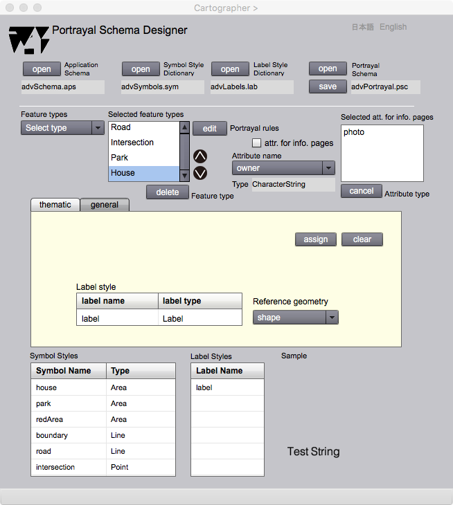
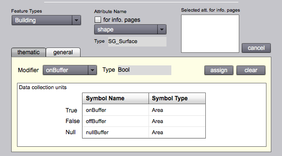
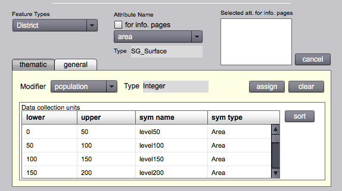

Portrayal Schema Designer
描画スキーマ
はじめに
地図を描くためには，記号と注記のスタイルを地物の属性と関連づける必要があります．この関連付けが行われると，属性値を地図上でどのようなスタイルで表現したら良いか，gittok が判断し，地図を描画することができます．Portrayal Schema Designer は，地物の属性と，記号や注記のスタイルとの関連付けを行い，描画スキーマを出力するために用意されています．
この作業を行うには，利用者は事前に描画スキーマについて理解すべきです．以下，描画スキーマの説明を行い，次にPortrayal Schema Designerの操作法を解説します．
描画スキーマのためのモデル
描画スキーマとは，地図を描画するに当って，使用する応用スキーマ，記号スタイル辞書と注記スタイル辞書を使用して，地物ごとに，描画する属性とそのスタイルをしめすスキーマのことです．描画スキーマを作るためのモデルが下に示すUMLクラス図です．描画スキーマのためのモデルは，リストスキーマのためのモデルとともに一般描画モデル (General Portrayal Model: GPM) を構成します．描画スキーマやリストスキーマとGPMの関係は，応用スキーマに対するGFMの関係に似ています．両者とも，インスタンス，モデル，メタモデルという３段階の構成をとっています．つまり，
| インスタンス | モデル | メタモデル |
|---|---|---|
| 地図 | 描画スキーマ | GPM |
| 地理データ | 応用スキーマ | GFM |
図１．描画スキーマのためのモデル
CLASSES
PortrayalSchema
描画スキーマのルートクラスです．使用する応用スキーマのURL (applicationSchemaURL)，記号スタイル辞書 (symbolStyleDictionary) と注記スタイル辞書 (labelStyleDictionary) を示し，地物型と描画スタイルの対応情報 (FeaturePortrayalUnit) を保存する配列 (fpUnits) をもちます．
FeaturePortrayalUnit
地物型のID (featureTypeID) と，それに対応する主題修飾子 (thematicModifier) または一般修飾子の配列 (generalModifiers),そしてさらに情報ページ (infoPages) を示すクラスです．ここで修飾子 (modifier) とは，地物属性を修飾して記号に変換させる情報をさします．情報ページは，画像，映像，URLなど，メディアごとに属性を表示させるページです．
AttributeStylePair
属性・スタイル対 (AttributeStylePair) は，地物属性と，それに対応する記号／注記の対であり，地物属性をどのように描画するかを決めるためのクラスで，ここでは一般修飾子と呼びます．属性名称 (attName)，属性のデータ型 (attType)をもちます．ただし，このクラスは抽象クラスであり，実際の情報は子クラスである，属性・記号対または属性・注記対として保存されます．
AttributeSymbolPair
属性・記号対 (AttributeSymbolPair) は，属性名称，属性型と，それを記号化するための記号名称 (symName) 及び記号型 (symType)をもちます．
AttributeLabelPair
属性・注記対 (AttributeLabelPair) は，属性名称，属性型と，それを注記表示するための注記名称 (labelName) 及び注記型 (labelType)をもちます．AttributeLabelPair は，注記を置く基準となる参照位置 (refGeomAttName) をもちます．これは，注記表現の対象となる地物の幾何属性の中から指定されます．
ThematicCondition
主題条件 (ThematicCondition)は，主題図を描画するための条件を示す情報です．主題修飾子．主題修飾子になる地物属性の名前 (attName) とそのデータ型 (attType) を属性としてもちます．ここで主題図とは，一定のテーマに絞って作成された地図のことですが，gittok では，主題属性の値を使って，proxyになっている幾何属性を表現する地図をさします．具体的には主題属性がブール値をとる場合，それはtrue, false もしくは値を持たない場合で，地図上に表示する幾何属性の表現を変えます．また，属性の型が文字列の場合は，その値ごとに，幾何属性を異なる表現にします．さらに，属性の型が数字の場合は，複数の区間を設定して，区間ごとにことなる，幾何属性のコロプレスマップ (Choropleth Map) 表現ができるようにします．
Modifier
このクラスは抽象クラスであり，実際には子クラスである，ブール値（BooleanModifier），文字列 (QaulitativeModifier) または数字の区間 (QuantitativeModifier) のいずれかが，Modifier から継承する記号名称 (symName) と記号型 (symType) とともに，一般修飾子になります．
BooleanModifier
ブール値とそれをグラフィックに表現する記号の名前と型をもつ，ブール値用の修飾子．ブール値 (true, false, null) の違いによって，異なる記号表現が可能になる．
QualitativeModifier
文字列とそれをグラフィックに表現する記号の名前と型をもつ，文字列用の修飾子．ことなる文字列が異なる記号表現を可能にする．
QuantitativeModifier
最小値 (lowerValue)と最大値 (upperValue)を示して，その範囲に値が入ったときに，グラフィックに表現する記号の名前と型をもつ，数値による修飾子．
gfm:AttributeType
情報ページ (info page) で表現するマルチメディアな地物属性の型を示します．これを指定することによって，対話型地図 (interactive map) 上で，それぞれのメディアごとに情報を表示することが可能になります．
ROLL NAMES
fpUnits
PortrayalSchemaからみた，FeaturePortrayalUnitの役割．地物を視覚化する地物描画ユニットの配列．
generalModifiers
FeaturePortrayalUnit からみた，AttributeStylePair の役割．一般図用の，記号による地物表現を行うために指定される，一般修飾子の配列．
thematicModifier
FeaturePortrayalUnit からみた，ThematicConditionの役割．主題属性の値による，proxy属性の主題図（コロプレスマップ）表現を行うために指定される，主題修飾子．gittokでは，一つの地物型に対して主題図表現を許しているので，多重度は，０か１です．
elements
ThemeticConditionからみた，Modofier の役割．主題図の主題属性の値によって表示指定される修飾子 (modifier) の配列．
infoPages
FeaturePortrayalUnit からみた，AttributeType の役割．対話型地図用に，情報ページとして表示する属性型の配列．属性型には，属性の名前やデータ型の指定などがあるので，どの属性をどの情報ページで表示すればよいかが分かります．ちなみにAttributeType クラスはGFMの中で定義されています．
Portrayal Schema Designer
ファイルのオープンとセーブ

図２ Portrayal Schema Designerで使用するファイル
Portrayal Schema Designer では，応用スキーマ，記号スタイル辞書及び注記スタイル辞書をオープンして描画スキーマをデザインし，結果として描画スキーマをセーブします．また，既存の描画スキーマをオープンすると，自動的にデザインに必要なファイルがオープンされます．
FIELDS
Application Schema
地図表示の対象となるキットが使用している応用スキーマがオープンされると，そのファイル名が表示されます．
Symbol Style Dictionary
描画に使用する記号スタイル辞書のファイル名が表示されます．
Label Style Dictionary
描画に使用する注記スタイル辞書のファイル名が表示されます．
Portrayal Schema
地物の属性型と記号または注記スタイルとの関連が全て割り当てられると，それを描画スキーマとしてセーブします．既存の描画スキーマを編集するときに描画スキーマのファイルをオープンすると，ここに描画スキーマの名前が表示されます．
BUTTONS
open (Application Schema)
応用スキーマをオープンします．
open (SymbolStyle Schema)
記号スタイル辞書をオープンします．
open (Label Style Schema)
注記スタイル辞書をオープンします．
open (Portrayal Schema)
描画スキーマをオープンします．
save (Portrayal Schema)
描画スキーマをセーブします．
日本語
今あなたが読んでいるドキュメントが表示されます．
English
You can read the tutorial written in English.
一般図用の幾何属性及び主題属性の修飾
一般図は，Slocum et al. (2005 ) では，以下のように説明されています．
General-reference maps are used to emphasize the location of spatial phenomena.
つまり，一般図は，どこに何があるかを示す一般的な用途に使われる地図です．代表的なものに，国土地理院が提供している地形図や国土基本図があります．
下に示す画面は，描画スキーマの設計をおこなうための画面ですが，中程にあるtabで，general が選択されているので，これは，一般図用の修飾を行う画面ということになります．ここでは，地物の幾何属性に対して，どのような記号スタイルを対応させるか，また文字列属性に対して，どのような注記スタイルを対応せるかを，指定します．

図３−１．Portrayal Schema Designer (general) における記号スタイルの割り当て．
幾何属性には記号スタイルを割り当てます．Symbol Stylesから幾何属性に対応させる記号を選択し，assign buttonを押すと，図３−１に示すように，general tab中のSymbol Stylesに，割り当てた記号スタイルが表示されます．

図３−２．Portrayal Schema Designer (general) における注記スタイルの割り当て．
主題属性には注記スタイルを割り当てます．Label Stylesから主題属性に対応させる注記スタイルを選択し，assign buttonを押すと，図３−２に示すように，general tab中のLabel Stylesに，割り当てた注記スタイルが表示されます．
ところで，注記を置く位置がわからなければ表示はできません．そこでLabel style欄の右側に，Reference geometry ドロップダウンリストが表示されます．これは，対象としている地物がもつ幾何属性の一覧です．この一覧の中から適当な幾何属性を指定し，それを注記の表示位置にします．線や面を選ぶと，それらの中心（面の場合は重心，線の場合は線上の中間地点）に注記が配置されます．
FIELDS
Feature Types (選択可能）
どの地物型を地図表示の対象とするか選択するための地物一覧が表示されます．
Selected feature types （選択可能）
Feature types ドロップダウンリストで地物型を選択すると，ここに，地図表示される地物型の一覧が表示されます．
Attribute Name（選択可能）
選択した地物型のどの属性型を表示の対象にするか選択すると，その属性型の名前が表示されます．
Type
選択された属性の型名が表示されます．
general tab > Symbol style (図 3-1)
下にある Symbol Styes リストで，幾何属性を修飾する記号スタイルを選択し，assign ボタンを押すと，それがここに表示されます．
general tab > Label style (図 3-2)
下にある Label Styes リストで，主題属性を修飾する注記スタイルを選択し，assign ボタンを押すと，それがここに表示されます．さらに，このラベルの参照位置をきめるための幾何属性を選択することによって，ラベルの地図表示が可能になります．
Selected att. for info. pages
att. for info. page がチェックされているときに，Attribute name ドロップダウンリストから属性を選択すると，情報ページとして表示する属性として，このリストに属性名が付け加えられます．
Symbol styles
記号スタイル辞書に含まれているスタイルの一覧です．スタイルを選択すると，サンプルが右に示されます．
Label styles
注記スタイル辞書に含まれているスタイルの一覧です．スタイルを選択すると，サンプルが右に示されます．
Reference geometry (図 3-2)
ラベル表示を行うための基準となる幾何属性が表示されます．この中から選択すると，その中心を参照位置としてラベルが表示されます．
Sample
選択された記号または注記スタイルのサンプルを表示します．
Reference geometry
注記の参照位置を指定するための幾何属性をここで選択します．
BUTTONS

'Selected feature types' リスト上の地物名を選択してからこのボタンを押すと，地物名が一行上に移動する．この機能は地図上の表示順位を示す．上にある地物型ほど，先に表示される．

'Selected feature types' リスト上の地物名を選択してからこのボタンを押すと，地物名が一行下に移動する．この機能は地図上の表示順位を示す．下にある地物型ほど，後に表示される．
cancel
'Slected att. for info. page' に表示されている属性名を選択してからこのボタンを押すと，削除される．
att. for info. page
このチェックボックスをチェックしているとき，Attribute name ドロップダウンリストに表示された属性を選択すると，情報ページとして表示する属性として，Selected att. for info. page に追加表示されます．
general tab
この tab を選択すると，一般図用の修飾が可能になります．
assign
下のリストで選択されているスタイルを，地物属性を修飾するスタイルとして指定します．
clear
指定されているスタイルを解除します．
主題図用の修飾
主題図は，Slocum et al. (2005 ) では，以下のように説明されています．
Thematic maps (or statistical maps) are used to emphasize the spatial pattern of one or more geographic attributes (or variables), such as population density, familiy income, and daily temparature maximums.
つまり，主題図（統計図）とは，人口密度，家族の収入，そして毎日の最高気温など，地理的な属性の空間パターンに焦点をあてて表示する地図です．gittok では，主題図は，一つの地物型の任意の幾何属性型に着目して，その幾何属性を使って地図上に表現する主題を決め，その主題属性の値に応じた記号スタイルで表示を行う地図を指します．

図４−１．Portrayal Schema Designer (thematic) の操作画面
主題図は以下の手順でデザインします．
１．対象となる地物型の指定
２．修飾される幾何属性型の指定
３．thematicタブを指定
４．Modifierドロップダウンリストで修飾子になる主題属性の指定
５−１．修飾子の型がブール値の場合は，Symbol Stylesから，true, falseまたはnullの場合の記号を選択します (図４−２)．nullの場合とは，ブール値が主題属性に与えられていないことを指します．例えば，なにかの調査を行って，調査範囲では真偽が決められても，調査地域外では決められていませんので，その場合は主題属性値はnullになります．

図４−２．ブール値で幾何属性を修飾する場合
５−２．修飾子の型が文字列の場合は，Symbol Stylesから，それぞれの文字列にあった記号を選択します（図４−３）．この場合の文字列は一般にはコードと呼ばれ，コードのバリエーションを示す表は，コードリストと言われます．例えばコードリストは「低，中，高」とか，「ブナ (oak)，ミズナラ (quercus)，カエデ(maple)」のように，地物の種類を示す符号としての文字列のリストになることが多いでしょう．gittokでは現在，「低いブナ」というような，多次元のコード設定に対応した記号選択はできません．今後の課題です．

図４−３．文字列で幾何属性を修飾する場合
５−３．修飾子の型が数値の場合は，数値の範囲（下限と上限）をData collection units欄にキーインし，Symbol Stylesから，対応する記号を選択します（図４−４）．多くの場合，修飾される幾何属性は面になります．修飾子は，その面を塗る色を指定します．色は，数値の範囲の段階に応じて利用者が決めることになります．ただし，地図を見た人は違和感を覚えることになりますので，色の使い方には気をつけるべきです．コロプレスマップの配色については，Color Brewer のような配色ガイドが役に立ちます．

図４−４．数値で幾何属性を修飾する場合
FIELDS
Feature Types (編集可能)
どの地物を修飾の対象とするか選択するための地物一覧が表示されます．
Attribute Name (編集可能)
主題を表示する幾何属性を選択すると，その属性の名前が表示されます．
Type（幾何属性）
選択された幾何属性の型が表示されます．
thematic > Modifier (編集可能)
幾何属性を修飾するために使用する主題属性を指定すると，その名前が表示されます．
thematic > Type (主題属性)
主題属性の型が表示されます．
Data collection units (編集可能)
このテーブルで，それぞれの属性値もしくはその範囲に対する修飾子を指定します．
修飾する主題属性がブール値の場合は，true, false そしてnull の場合の記号を選択し，assign ボタンを押します．
修飾する主題属性が文字列の場合は，まずvalue 欄に文字列をキーインします．次に，その文字列が現れたときに領域を塗りつぶすエリア記号を選択し，assign ボタンを押します．これを全ての文字列分，繰り返します．
修飾する主題属性が数値の場合は，値を取りうる区間を幾つかのデータ集合単位に分けて，その単位に入る値をもつ地物はその単位にアサインされたエリア記号で塗られます．例えば，人口０人から５０人の間の値をとる場所は，サンプル欄に示された色で塗られます．データ集合単位の設定法は，まず，最小値と最大値をキーインします．次にSymbol Styleリストから，対応するエリア記号を選びます．そしてassign ボタンを押せば，データ集合単位が一つ定義されたことになります．これを単位の数だけ繰り返します．BUTTONS
thematic
この tab を選択すると，主題図用の修飾が可能になります．
assign
下のリストで選択されているスタイルを，地物属性を修飾するスタイルとして指定します．
clear
指定されているスタイルを解除します．
情報ページとして表示される主題属性の指定
地図は主に幾何属性や文字列属性の表示を行うためにある．しかし，地物は画像や動画など，マルチメディアな属性ももつので，gittokでは，その特性に合わせた表示を行う情報ページを用意している．描画スキーマでは，情報ページに表示される属性の指定を行う．

図５．情報ページ表示のための主題属性指定
情報ページでの属性表示は，地物を指定し，情報ページへの表示をチェックし，主題属性を選択することによって可能になる．主題属性を指定するとその属性が一覧表示される，
FIELDS
Feature Types (編集可能)
どの地物を情報ページ表示の対象とするか選択するための地物一覧が表示されます．
Attribute Name (編集可能)
主題属性を選択すると，その属性の名前が表示されます．
Selected att. for info.pages
選択された主題属性の名前が一覧表示されます．
BUTTONS
for info.pages
このチェックボックスをチェックすると，以後，選択される属性は情報ページに表示する属性になります．
cancel
情報ページによる表示を解除するときは，一覧表示されている属性を選択してから，このボタンを押します．
参考文献
Slocum, T. A., McMaster, R. B., Kessler, F. C,. Howard, H. H, (2003). Thematic Cartography and Geographic Visualization. Pearson Education, Inc., p.2